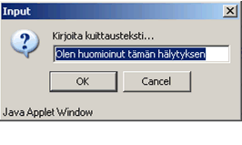

963:een lähetettyihin hälytyksiin on reagoitava, jotta voitaisiin osoittaa, että hälytys on nähty. Reagoidessasi hälytykseen sinun on kirjoitettava kuvaus toimenpiteestä, jonka teet hälytyksen perusteella.
Hälytysten käsittelemiseksi:
Napsauta käsiteltävää hälytystä (hälytyksiä) (jos haluat valita useampia hälytyksiä, pidä CTRL-näppäin alhaalla ja napsauta haluamiasi hälytyksiä). Voit valita kaikki hälytykset napsauttamalla Valitse kaikki tai tyhjentää kaikki valinnat napsauttamalla Poista valinnat.
Napsauta Kuittaa valitut hälytykset. Kirjoita kuittausteksti -keskusteluruutu tulee näkyviin.

Kirjoita kenttään kuvaus toimenpiteestä vianmäärityksen helpottamiseksi tulevaisuudessa (esim. toimenpide, jonka teit hälytyksen perusteella).
Napsauta OK.
Huomaa, että tämä toiminto on käytettävissä vain kun olet yhteydessä 963 Serveriin graafisessa tilassa.